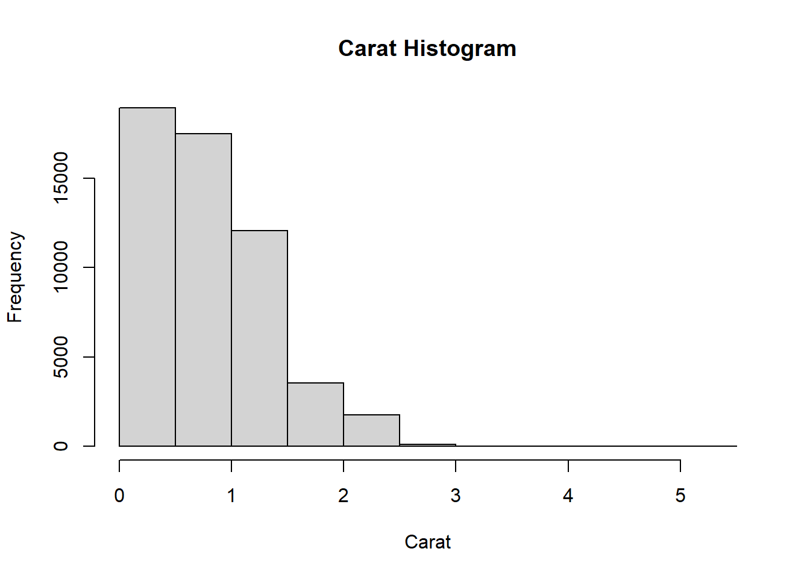
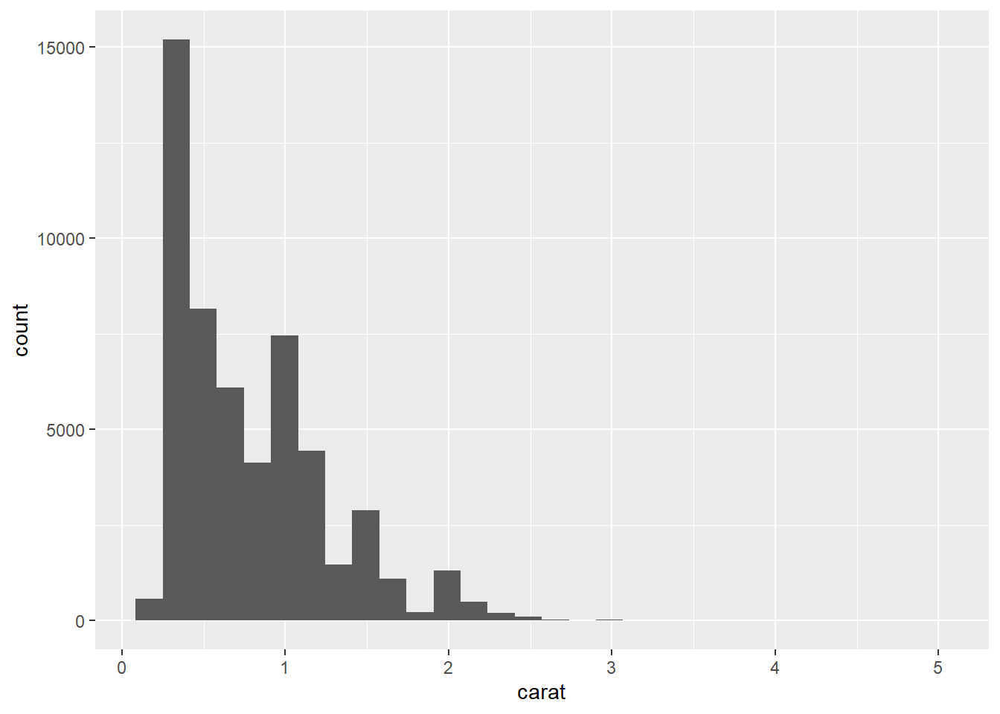
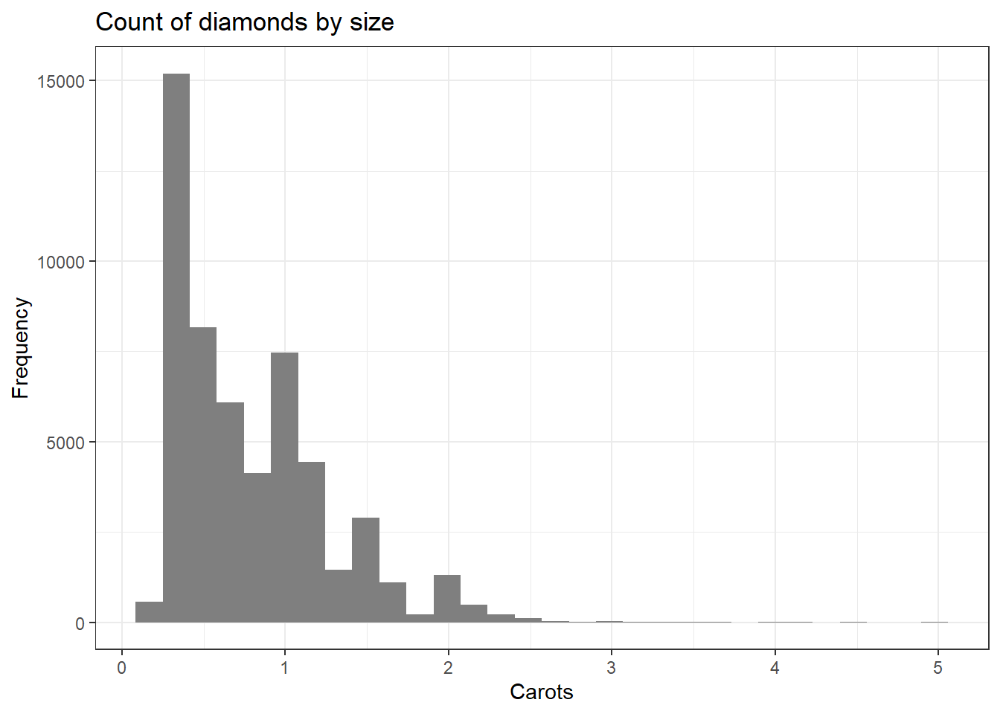

Chapter 2 Introduction to R
R은 프로그래밍 언어에 가까운데 통계분석에도 꽤나 특화되어 있습니다. 요즘 Python 등도 주목받고 있지만 사회과학적 정량연구에 적용하는 정도로 통계분석을 수행하는 유관 학과들에서는 R을 많이 사용하는 것 같습니다. R은 단순하지만 동시에 복합적인 조합을 통해서 여러가지 분석을 수행할 수 있기 때문입니다.1
다음 포스팅에서는 RStudio를 이용한 R의 기본적인 요소들을 소개할 것입니다. RStudio에 대한 간략한 소개는 다음의 RStudio 공식 링크에서 살펴볼 수 있습니다.
2.1 기본 동작에 관한 소개
일단 R에서 일반적으로 사용하는 코드를 제외하고 코멘트를 달고 싶을 때에는 # 를 사용합니다. # 기호 뒤에 쓴 글들은 RStudio에서 작동되지 않스니다. 코멘트를 작성하는 습관을 들여놓는 게 좋은데, 본인이 만들어놓은 코드와 데이터셋 이름을 까먹어서 고생하지 않도록 해주고 다른 사람이 코드를 읽을 때에도 꽤나 유용하기 때문입니다.
작동코드를 작성하기 전에 쓰는 설명은 보통
##로, 작동코드 옆에 병기하는 인라인 코드(in-line code)는#로 구분하여 코멘트를 작성해줍니다.- 즉,
##은 한 줄이 아예 전체 코멘트일 때,#은 R 코드 옆에 해당 코드의 내용에 대해 코멘트할 때 사용합니다.
- 즉,
예를 들면, 아래와 같은 코드에서 첫 번째 줄은 단순히 어떠한 분석을 수행할지 알려주는 역할만 하고, 아래의 코드가 실제로 작동될 것입니다.
## [1] 2
R을 배우면 배울수록, 여러가지 노하우가 체화되고 보다 효율적인 코딩을 시도하게 되는데, 일단 간단한 팁들은 여기에서 살펴볼 수 있습니다. 이러한 팁과 노하우들에 익숙해지면 코드를 읽고, 공유하고, 짜는 게 조금 더 쉬워질 것이라고 생각합니다.
2.2 R의 연산자(operations)
일단 사회과학을 연구하고자 하는 입장에서 R을 사용하고자 하니, R이 가진 단순한 수학연산자들이 어떻게 기능하는지를 살펴볼 필요가 있습니다.
R 안에서 어떠한 수학연산자들이 있는지 살펴보고 싶다면 RStudio 좌측 하단 콘솔에
?"*"라고 입력해보면 됩니다.사실 코드블럭의 왼쪽 기호는 몰랐을 수도 있는데, 오른쪽의 의미를 모를 것이라고는 생각하지 않습니다. 따라서 자세한 설명은 넘어가고… 이 중에서 마지막 기호는 조금 익숙해질 필요는 있습니다. 저도 아직 연구에서 변수 조작(manipulation)할 때 사용해본 적은 없는 기호입니다만, 평소에는 크게 쓸 일이 없기 때문에 까먹지 않도록 하는 것이 중요할 것 같습니다.
마지막 기호를 이용해서 할 수 있는 대표적인 작업이 루프에서 특정 변수가 홀수인지 짝수인지 구분하게 하는 것 등입니다. 만약 2로 나누어 나머지가 남으면 홀수, 남지 않으면 짝수라고 생각해볼 수 있습니다.
## [1] 9## [1] 8## [1] 6## 마지막으로 연산자를 가지고 계산할 때, 그리고 연산자 뿐 아니라 코딩 전체에 있어서 ## 순서를 잘 고려하여 코딩해야 합니다. 아래 두 계산은 완전히 결과가 다릅니다. 3 + 4 / 7## [1] 3.571429## [1] 1
2.3 R의 기본적인 자료 유형
R은 여러 가지 자료 유형을 제공합니다. 예를 들어 바로 위에서 계산할 때 사용하였던 숫자는 말 그대로 R에서 숫자형(numeric)으로 간주됩니다. 기본적으로 반드시 알아두어야 할 자료 유형은 다음과 같습니다.
- 숫자형(numeric): 1.111 같이 소수점 값을 가지는 자료 유형입니다.
- 정수형(integer): 2와 같은 자연수를 말하는 데, 소수점 값을 갖지 않는 것. 숫자형이랑 비슷합니다.
- 논리형(logical): 부울리안 값(Boolean values), 참(TRUE)/거짓(FALSE)을 가지는 자료 유형입니다.
- 문자형(character): 문자열(text or string)의 값을 지니는 것으로 인용자("")를 사용하여 입력합니다.
자료 유형을 살펴보았으니, 잠깐 변수 배정(variable assignment)에 대해 얘기해보겠습니다. 뭐랄까, 걍 어떤 변수를 만드는 거라고 생각하면 됩니다. 변수는 통계학에서 가장 기본적인 개념 중 하나이니 따로 설명할 필요는 없을 것 같습니다.
R에서 우리는 어떤 값(values)을 객체(object)에 저장합니다. 이때 객체는 함수(functions)일 수도 있고 그래프(plots)이거나 혹은 데이터셋(datasets)일 수도 있습니다. 즉, 그냥 콘솔에다가 2를 치면 결과 창에 2가 나오기는 하겠지만 그거 자체를 바로 분석에 사용할 수는 없고, 사용한다고 하더라도 지속적이지 않습니다. 계속 그 값을 써먹으려면 우리도 그 값에 이름을 붙여줘야 합니다. 그 값의 성격에 따라서 그것이 저장된 용기(container)의 이름도 바뀐다고 생각하시면 편합니다. 어떤 식 자체를 저장했다면 함수의 형태로, 혹은 숫자만 넣어놨다면 걍 숫자 하나가 담긴 객체가 될 것입니다. R에서 변수를 배정하기 위해서는 <- 나 =의 기호를 사용하여야 한다. 사용해본 경험으로는 <-를 더 추천합니다.2
## [1] 4이제는 객체/변수와 연산자를 같이 사용하여 계산을 해보겠습니다.
## 오렌지라는 변수에다가 값을 집어넣어 보겠습니다.
oranges <- 6
## 오렌지에는 6이 들어가 있고 사과에는 4가 들어가 있습니다. 두 개를 더해 보겠습니다.
apples + oranges## [1] 10다음으로는 숫자가 아니라 다른 형태의 자료를 담아보겠습니다. 주의할 점은 자료 형태가 서로 다른 변수들 끼리는 연산자를 통해 계산할 수 없다는 점입니다.
## 오렌지 객체에 문자열 자료를 다시 저장해봅니다.
oranges <- "six"
## 오렌지와 사과를 더해 보겠습니다.
apples + oranges # 에러메세지를 확인할 수 있습니다.## Error in apples + oranges: non-numeric argument to binary operator2.3.1 논리형 연산자 (Logical operators)
앞서 수학연산자를 간단하게 살펴보았는데, 이번에는 논리형 연산자를 한 번 살펴 보겠습니다. 논리형 연산자는 부울리안 값(TRUE or FALSE)을 나타냅니다. 논리형 연산자는 아래와 같고, 좀 더 구체적인 내용은 여기에서 확인할 수 있습니다.
a < b # a가 b보다 작다는 것을 보여줍니다.
a <= b # a가 b보다 작거나 같다는 것을 보여줍니다.
a > b # a가 b보다 크다는 것을 보여줍니다.
a >= b # a가 b보다 크거나 같다는 것을 보여줍니다.
a == b # a와 b가 같다/동일하다는 것을 보여줍니다.
!a # a가 아니라는 의미입니다.위의 연산자를 가지고 아래의 연습을 해보겠습니다.
## [1] TRUE## [1] FALSER에서 TRUE는 1과 같고, FALSE는 0과 같습니다. 그렇다면 다음의 연습을 해보겠습니다.
## [1] 5R은 매우 까다롭습니다. 하나라도 다르면 기대한대로 결과가 나오지 않거나 작동하지 않고 에러메세지를 띄우기도 다반사입니다. 아래의 경우를 살펴보겠습니다.
## 대문자와 소문자를 가리는 R
oranges <- "six"
Oranges <- "Six"
oranges == Oranges # six와 Six는 앞의 문자가 하나 다르기 때문에 ## [1] FALSE2.4 벡터 (Vectors)
앞서 변수에 대해서 얘기했는데, 이번에는 벡터에 대해서 살펴볼 것입니다. 벡터는 원하는 만큼 많은 데이터를 일차원(one-dimension)에 배열할 수 있는 형태의 자료로, R에서 벡터를 만들기 위해서는 c() 형태의 함수를 이용합니다. 이 함수의 괄호 내부에 원하는 요소들을 콤마(,)를 이용해 배열하면 하나의 벡터에 담을 수 있습니다.
이번에는 문자형 자료가 담긴 벡터와 논리형(부울리안) 값을 가진 벡터를 만들어 보겠습니다. 만들고 난 이후에 class()나 typeof() 함수를 이용하여 벡터에 어떠한 형태의 자료가 담겼는지를 확인할 수 있습니다.
## 여러 자료 유형을 이용하여 벡터를 만들어 보겠습니다.
mix_vec <- c(1, "Hi", TRUE)
class(mix_vec) # Character라는 답을 얻게 됩니다.## [1] "character"## [1] "character"하나라도 다른 유형의 자료가 벡터 안에 포함되면 기대한 결과를 얻지 못할 수 있기 때문에 항상 class() 함수로 확인해주는 것이 필요합니다. 그리고 벡터도 수학연산자들을 이용해 일종의 계산이 가능한데, 단, R은 굉장히 ’까다롭다’는 것을 기억하셔야 합니다. 벡터의 경우에는 요소 하나하나를 구별해서 인식하기 때문입니다. 다음의 예를 살펴 보겠습니다.
## [1] 5 7 9## [1] 5 7 9위의 두 결과는 동일합니다. 정확히는 위의 식을 아래와 같은 식으로 R이 계산하여 결과를 보여준다고 하는 것이 맞을 것입니다. 다른 연산자들은 어떨까요? 그리고 만약 벡터의 요소 개수가 서로 다르면(보통 길이가 다르다고 한다) 어떻게 될까요? 다음 코드를 통해 한 번 살펴 보겠습니다.
## [1] 4 10 18## Warning in c(1, 2) + c(4, 5, 6, 7, 8): longer object length is not a multiple of
## shorter object length## [1] 5 7 7 9 9## Warning in c(1, 2) * c(4, 5, 6, 7, 8): longer object length is not a multiple of
## shorter object length## [1] 4 10 6 14 8아래의 두 코드를 살펴보면 짧은 길이의 벡터가 긴 길이의 벡터에 반복해서 계산되는 것을 알 수 있습니다. 벡터는 여러 개의 요소 값(element value)을 가질 수 있는데, 그 중에서 하나의 값을 원할 경우에는 대괄호를 이용합니다.
## [1] 63## [1] 11 442.5 매트릭스 (Matrices)
이번에는 매트릭스를 살펴보겠습니다. 매트릭스는 일정한 수의 열과 행으로 이루어진 두 차원(two dimension)의 집합이라고 할 수 있습니다. 이때, 매트릭스를 이루는 요소들은 같은 유형의 자료들이어야 합니다. 매트릭스는 다음과 같은 함수를 통해 만들어볼 수 있습니다.
## [,1] [,2] [,3] [,4]
## [1,] 1 2 3 4
## [2,] 5 6 7 8
## [3,] 9 10 11 12매트릭스 함수를 이용하지 않고서라도 벡터들을 cbind(), 즉 열(column) 결합 또는 rbind(), 행(row) 결합 함수를 이용하여 합쳐 매트릭스를 만들 수 있습니다.
## c1 c2 c3
## [1,] 1 4 7
## [2,] 2 5 8
## [3,] 3 6 9## [,1] [,2] [,3]
## c1 1 2 3
## c2 4 5 6
## c3 7 8 9매트릭스를 구성하는 요소 중 하나만 선택하기 위해서 우리는 대괄호(square brackets)를 사용합니다. 대괄호라고 하지만 이 과정은 R 프로그래밍에서 인덱싱(indexing)이라고 하는 것입니다. 즉, 행과 열의 목록에서 필요한 요소만을 지정해서 꺼낼 수 있도록 하는 기능입니다. 매트릭스는 두 차원으로 이루어져 있기 때문에, 특정 요소 하나만을 뽑아내기 위해서는 각각 차원에 배정된 숫자, 열 번호와 행 번호가 모두 필요합니다.
## [1] 2## [,1] [,2]
## [1,] 2 3
## [2,] 6 7기본적인 수학연산자를 이용하여 매트릭스도 요소들 간 계산을 할 수 있습니다.
## [,1] [,2] [,3] [,4]
## [1,] 12 13 14 15
## [2,] 16 17 18 19
## [3,] 20 21 22 23매트릭스를 이용한 계산을 자세하게 알고 싶다면 다음의 링크를 참조하면 좋을 듯합니다.
2.6 데이터프레임 (Data frame)
아마 사회과학 연구를 하게 되면 가장 많이 다루게 되는 자료 유형 중 하나일 것입니다. 일반적으로 우리가 사용하는 데이터셋은 거의 데이터 프레임 형태로 불러오게 됩니다. 데이터셋하면 일반적으로 행과 열이 있는 엑셀이 생각나 매트릭스랑 뭐가 다르지? 할 수 있는데, 아까도 말했다시피 매트릭스의 모든 요소는 동일한 유형의 자료여야 합니다. 정치학에서 많이 쓰는 자료 중 COW 데이터를 예로 들어보자면 COW 국가 코드(ccode)는 숫자형인 반면에, 국가 이름(cname)은 문자형입니다. 하나의 데이터셋에 서로 다른 유형의 자료가 담기게 되는 것입니다.
- 국가명: 문자형
- 국가의 GDP: 숫자형
- 어떤 국가가 민주주의인지 여부: 논리형
데이터 프레임은 다양한 유형의 자료를 열과 행의 틀 안에서 저장할 수 있도록 돕습니다.
## mpg cyl disp hp drat wt qsec vs am gear carb
## Mazda RX4 21.0 6 160.0 110 3.90 2.620 16.46 0 1 4 4
## Mazda RX4 Wag 21.0 6 160.0 110 3.90 2.875 17.02 0 1 4 4
## Datsun 710 22.8 4 108.0 93 3.85 2.320 18.61 1 1 4 1
## Hornet 4 Drive 21.4 6 258.0 110 3.08 3.215 19.44 1 0 3 1
## Hornet Sportabout 18.7 8 360.0 175 3.15 3.440 17.02 0 0 3 2
## Valiant 18.1 6 225.0 105 2.76 3.460 20.22 1 0 3 1
## Duster 360 14.3 8 360.0 245 3.21 3.570 15.84 0 0 3 4
## Merc 240D 24.4 4 146.7 62 3.69 3.190 20.00 1 0 4 2
## Merc 230 22.8 4 140.8 95 3.92 3.150 22.90 1 0 4 2
## Merc 280 19.2 6 167.6 123 3.92 3.440 18.30 1 0 4 4
## Merc 280C 17.8 6 167.6 123 3.92 3.440 18.90 1 0 4 4
## Merc 450SE 16.4 8 275.8 180 3.07 4.070 17.40 0 0 3 3
## Merc 450SL 17.3 8 275.8 180 3.07 3.730 17.60 0 0 3 3
## Merc 450SLC 15.2 8 275.8 180 3.07 3.780 18.00 0 0 3 3
## Cadillac Fleetwood 10.4 8 472.0 205 2.93 5.250 17.98 0 0 3 4
## Lincoln Continental 10.4 8 460.0 215 3.00 5.424 17.82 0 0 3 4
## Chrysler Imperial 14.7 8 440.0 230 3.23 5.345 17.42 0 0 3 4
## Fiat 128 32.4 4 78.7 66 4.08 2.200 19.47 1 1 4 1
## Honda Civic 30.4 4 75.7 52 4.93 1.615 18.52 1 1 4 2
## Toyota Corolla 33.9 4 71.1 65 4.22 1.835 19.90 1 1 4 1
## Toyota Corona 21.5 4 120.1 97 3.70 2.465 20.01 1 0 3 1
## Dodge Challenger 15.5 8 318.0 150 2.76 3.520 16.87 0 0 3 2
## AMC Javelin 15.2 8 304.0 150 3.15 3.435 17.30 0 0 3 2
## Camaro Z28 13.3 8 350.0 245 3.73 3.840 15.41 0 0 3 4
## Pontiac Firebird 19.2 8 400.0 175 3.08 3.845 17.05 0 0 3 2
## Fiat X1-9 27.3 4 79.0 66 4.08 1.935 18.90 1 1 4 1
## Porsche 914-2 26.0 4 120.3 91 4.43 2.140 16.70 0 1 5 2
## Lotus Europa 30.4 4 95.1 113 3.77 1.513 16.90 1 1 5 2
## Ford Pantera L 15.8 8 351.0 264 4.22 3.170 14.50 0 1 5 4
## Ferrari Dino 19.7 6 145.0 175 3.62 2.770 15.50 0 1 5 6
## Maserati Bora 15.0 8 301.0 335 3.54 3.570 14.60 0 1 5 8
## Volvo 142E 21.4 4 121.0 109 4.11 2.780 18.60 1 1 4 2데이터 프레임을 분석하는 데에는 여러 가지 이용가능한 함수들이 있습니다. 대표적인 것은 데이터셋의 상위 행 일부로 자료를 간략하게 보여주는 head(), 반대로 아래의 행들을 보여주는 tail(), 데이터셋이 몇개의 관측치(obs.)와 변수들로 이루어져 있는지 그 구조(structure)를 보여주는 str(), 요약통계치들을 제시하는 summary() 등이 대표적입니다.
만약 어떤 함수였는지, 어떤 자료 유형이었는지 헷갈린다면 R 콘솔 창에다가 물음표 뒤에 함수 이름을 쳐보면 자세한 정보를 확인할 수 있습니다.
그러나 데이터 프레임보다 자료를 불러올 때, tidyverse 패키지에 속한 티블 유형으로 불러올 것을 추천합니다.
2.7 티블 (Tibbles)
티블은 tidyverse 패키지의 속한 함수로 티블로 저장한 자료의 유형은 데이터프레임과는 약간 차이가 있습니다. 우선 티블의 장점은 더 유저 친화적이라는 것입니다. 예를 들어, 티블은 R 콘솔창에서 한 눈에 확인할 수 있을 정도로 데이터의 구조를 출력해주고, 각 열의 변수들이 가지는 자료 유형이 어떤 것인지를 보여줍니다. 종종 데이터프레임으로 구성된 자료 유형을 티블로 강제 변환해야 할 경우가 있는데, 이때는 as_tibble() 함수를 사용하면 된다.
일단 tidyverse 패키지는 R에 내장된 것이 아니라 Hadley Wickham이 개발한 것이기 때문에 별도로 불러와야 합니다. 패키지를 설치할 때는 install.packages(), 설치된 패키지를 불러올 때는 library() 혹은 require() 함수를 사용합니다.
## -- Attaching packages --------------------------------------------- tidyverse 1.3.0 --## v ggplot2 3.3.2 v purrr 0.3.4
## v tibble 3.0.2 v dplyr 1.0.0
## v tidyr 1.1.0 v stringr 1.4.0
## v readr 1.3.1 v forcats 0.5.0## -- Conflicts ------------------------------------------------ tidyverse_conflicts() --
## x dplyr::filter() masks stats::filter()
## x dplyr::lag() masks stats::lag()## Warning: `...` is not empty.
##
## We detected these problematic arguments:
## * `needs_dots`
##
## These dots only exist to allow future extensions and should be empty.
## Did you misspecify an argument?## # A tibble: 32 x 11
## mpg cyl disp hp drat wt qsec vs am gear carb
## <dbl> <dbl> <dbl> <dbl> <dbl> <dbl> <dbl> <dbl> <dbl> <dbl> <dbl>
## 1 21 6 160 110 3.9 2.62 16.5 0 1 4 4
## 2 21 6 160 110 3.9 2.88 17.0 0 1 4 4
## 3 22.8 4 108 93 3.85 2.32 18.6 1 1 4 1
## 4 21.4 6 258 110 3.08 3.22 19.4 1 0 3 1
## 5 18.7 8 360 175 3.15 3.44 17.0 0 0 3 2
## 6 18.1 6 225 105 2.76 3.46 20.2 1 0 3 1
## 7 14.3 8 360 245 3.21 3.57 15.8 0 0 3 4
## 8 24.4 4 147. 62 3.69 3.19 20 1 0 4 2
## 9 22.8 4 141. 95 3.92 3.15 22.9 1 0 4 2
## 10 19.2 6 168. 123 3.92 3.44 18.3 1 0 4 4
## # ... with 22 more rows2.8 패키지 (Packages)
위의 tidyverse 패키지에 대한 설명이 사실 여기 들어와야 하는데, 티블을 설명하느라 조금 당겨서 적었습니다. 이 섹션에서 패키지에 대한 내용을 조금 더 자세하게 들여다 보도록 하겠습니다.
R의 패키지는 함수와 객체의 모음(collection of functions and objects)이라고 할 수 있습니다. RStudio나 R을 열때마다, 여러 개의 패키지들이 자동으로 로드(load)됩니다. 어떤 패키지들이 로드되어 있는지 확인하고 싶으면 sessionInfo() 라는 함수를 사용하면 됩니다.
좀 더 복잡한 문제를 해결하기 위해서는 R에 기본적으로 탑재된 함수/패키지 이외에 추가적인 패키지를 필요로 할 때가 있습니다. 이 경우에는 다음과 같은 함수를 사용합니다.: install.package()
그리고 R에서는 패키지의 설치와 사용은 별개의 작업으로 설치된 패키지를 사용하기 위해서는 그 패키지를 로딩해야 하는데 이때는 library() 함수를 사용하시면 됩니다. 한 번 패키지를 설치하면 다시 설치할 필요는 없지만 새로운 R 세션을 시작할 때마다 매번 library() 함수를 이용해서 로딩을 해주어야 합니다.
## R 패키지 설치 예시
## foreign 함수는 version 12 이하의 STATA 파일(.dta)을 로딩할 수 있게 도와줍니다.
## install.packages("foreign")
## plyr 함수는 좀 더 복잡하고 고급스러운 자료 조작(manipulation)을 가능하게 합니다.
## install.packages("plyr")
## ggplot2 함수는 함수 가시화(visualization)를 돕습니다.
## install.packages("ggplot2")
# 설치한 패키지들을 사용하기 위하여 라이브러리(libraries)를 로드한다.
library(foreign)
library(plyr)
library(ggplot2)이렇게 로드된 패키지들의 상태와 작업창을 한 번에 저장하고 다음에 불러오고 싶을 때, 다음과 같은 패키지를 사용해 패키지들을 관리할 수도 있습니다.
## install.packages("session")
library(session)
save.session(file="test.Rda") # 현재까지 불러온 패키지와 객체들이 R 스크립트가 저장된
# 디렉토리에 test.Rda라는 이름으로 저장됩니다.
## 나중에 Rstudio 종료 후 다시 켰을 때,
restore.session(file="test.Rda") # 기존에 저장되었던 test.Rda를 불러옵니다.
## 이때, 주의해야할 점은 R 스크립트가 저장된 디렉토리가 세션 정보를 담은 Rda가 저장된
## 디렉토리와 같아야 한다는 점입니다. 만약 다르다면 file="다른 디렉토리/file.Rda"로
## 별도로 지정해주어야 합니다.패키지들에 대한 더 자세한 내용을 알고 싶다면 다음의 링크를 참고하면 좋습니다.
그리고 R이 여러 패키지를 설치하는 데 제약이 없다고는 하지만 로드는 개별 패키지별로 해야합니다. 마지막으로 한 번에 여러 개의 패키지들을 설치 및 로드할 수 있게 도와주는 패키지(패키지의 패키지…)가 있는데, 그건 여기에서 살펴볼 수 있습니다.3
2.9 디렉토리 생성 코드
R 스크립트의 작성을 시작하기에 앞서, 디렉토리 생성 코드를 살펴보는 이유는 코딩하는 데 있어서 깔끔한 파일 구조를 설정하는 법을 숙지해야 효율적인 작업이 가능하기 때문입니다. 논문을 쓰는 입장이기 때문에 제 경우는 다음과 같이 폴더 구조를 정리합니다.
Main projectdirectory \(\leftarrow\) 예를 들어, [2018_FALL_Regime_Growth]- 폴더명
codesubdirectory \(\leftarrow\) R 스크립트를 여기다 저장합니다. - 폴더명
tablessubdirectory \(\leftarrow\) R에서 만든 표를 저장합니다. - 폴더명
figuressubdirectory \(\leftarrow\) R에서 만든 그래프 등을 저장합니다. - 폴더명
tex filesubdirectory \(\leftarrow\) 논문 본문을 작성하는tex파일을 저장합니다.4
- 폴더명
하나 하나 윈도우 폴더 탐색기에서 만들 수도 있는데, R을 가지고도 편하게 만들 수 있습니다. 사실 익숙해져야 편하고 익숙해지기 전에는 약간 노가다 느낌나서 뭐하러 이짓하나 싶기도 합니다. 근데 익숙해지면 구조화된 폴더 트리 속에서 규칙적으로 네이밍되는 각 가지들로 이름만 바꾸면 되기 때문에 굉장히 편하다는 것을 알게 되실 겁니다.
- 예를 들어서, 원래 하던 프로젝트가
Main이라는 폴더의P1이라면 그 다음은P2니까P1의 R 스크립트에서 디렉토리를P2로 주소를 바꾸기만 하면 됩니다.
2.10 용례 (A working example)
아래는 실제로 코딩을 이용해서 자료를 요약하거나 가시화하는 사례들입니다. 앞으로는 다음과 같은 내용들을 차근차근 다루어볼 것입니다.
## 먼저 깔끔하게 R-콘솔 창을 정리합니다.
rm(list = ls())
## diamonds라는 데이터셋을 로드합니다. 이 데이터셋을 불러오려면 먼저 ggplot2를 설치하고
## 로드해야 합니다. ggplot2라는 패키지에 포함된 예제 데이터셋이기 때문입니다.
## install.packages("ggplot2") # 저는 이미 설치되어 있습니다.
library(ggplot2)
data(diamonds)
names(diamonds) # 데이터셋에 포함된 변수들의 이름을 확인할 수 있습니다.## [1] "carat" "cut" "color" "clarity" "depth" "table" "price"
## [8] "x" "y" "z"## Warning: `...` is not empty.
##
## We detected these problematic arguments:
## * `needs_dots`
##
## These dots only exist to allow future extensions and should be empty.
## Did you misspecify an argument?## # A tibble: 6 x 10
## carat cut color clarity depth table price x y z
## <dbl> <ord> <ord> <ord> <dbl> <dbl> <int> <dbl> <dbl> <dbl>
## 1 0.23 Ideal E SI2 61.5 55 326 3.95 3.98 2.43
## 2 0.21 Premium E SI1 59.8 61 326 3.89 3.84 2.31
## 3 0.23 Good E VS1 56.9 65 327 4.05 4.07 2.31
## 4 0.290 Premium I VS2 62.4 58 334 4.2 4.23 2.63
## 5 0.31 Good J SI2 63.3 58 335 4.34 4.35 2.75
## 6 0.24 Very Good J VVS2 62.8 57 336 3.94 3.96 2.48## tibble [53,940 x 10] (S3: tbl_df/tbl/data.frame)
## $ carat : num [1:53940] 0.23 0.21 0.23 0.29 0.31 0.24 0.24 0.26 0.22 0.23 ...
## $ cut : Ord.factor w/ 5 levels "Fair"<"Good"<..: 5 4 2 4 2 3 3 3 1 3 ...
## $ color : Ord.factor w/ 7 levels "D"<"E"<"F"<"G"<..: 2 2 2 6 7 7 6 5 2 5 ...
## $ clarity: Ord.factor w/ 8 levels "I1"<"SI2"<"SI1"<..: 2 3 5 4 2 6 7 3 4 5 ...
## $ depth : num [1:53940] 61.5 59.8 56.9 62.4 63.3 62.8 62.3 61.9 65.1 59.4 ...
## $ table : num [1:53940] 55 61 65 58 58 57 57 55 61 61 ...
## $ price : int [1:53940] 326 326 327 334 335 336 336 337 337 338 ...
## $ x : num [1:53940] 3.95 3.89 4.05 4.2 4.34 3.94 3.95 4.07 3.87 4 ...
## $ y : num [1:53940] 3.98 3.84 4.07 4.23 4.35 3.96 3.98 4.11 3.78 4.05 ...
## $ z : num [1:53940] 2.43 2.31 2.31 2.63 2.75 2.48 2.47 2.53 2.49 2.39 ...## carat cut color clarity depth
## Min. :0.2000 Fair : 1610 D: 6775 SI1 :13065 Min. :43.00
## 1st Qu.:0.4000 Good : 4906 E: 9797 VS2 :12258 1st Qu.:61.00
## Median :0.7000 Very Good:12082 F: 9542 SI2 : 9194 Median :61.80
## Mean :0.7979 Premium :13791 G:11292 VS1 : 8171 Mean :61.75
## 3rd Qu.:1.0400 Ideal :21551 H: 8304 VVS2 : 5066 3rd Qu.:62.50
## Max. :5.0100 I: 5422 VVS1 : 3655 Max. :79.00
## J: 2808 (Other): 2531
## table price x y
## Min. :43.00 Min. : 326 Min. : 0.000 Min. : 0.000
## 1st Qu.:56.00 1st Qu.: 950 1st Qu.: 4.710 1st Qu.: 4.720
## Median :57.00 Median : 2401 Median : 5.700 Median : 5.710
## Mean :57.46 Mean : 3933 Mean : 5.731 Mean : 5.735
## 3rd Qu.:59.00 3rd Qu.: 5324 3rd Qu.: 6.540 3rd Qu.: 6.540
## Max. :95.00 Max. :18823 Max. :10.740 Max. :58.900
##
## z
## Min. : 0.000
## 1st Qu.: 2.910
## Median : 3.530
## Mean : 3.539
## 3rd Qu.: 4.040
## Max. :31.800
## 
## R애 내장된 기본 함수가 아니라 ggplot2를 이용해서 똑같은 히스토그램 만들어 보겠습니다.
ggplot(data = diamonds) + geom_histogram(aes(x = carat))## `stat_bin()` using `bins = 30`. Pick better value with `binwidth`.
## ggplot2는 "+"를 이용해서 다양한 형태의 추가적인 정보를 레이어 형식으로 더할 수 있습니다.
ggplot(data = diamonds) +
geom_histogram(aes(x = carat), fill = "grey50") + # 히스토그램 막대색 변경
ylab("Frequency") + xlab("Carots") +
ggtitle("Count of diamonds by size") +
theme_bw() # 그래프 배경색 변경## `stat_bin()` using `bins = 30`. Pick better value with `binwidth`.
## 아까 만들었던 그래프 폴더에 그래프를 저장할 수 있습니다.
# ggsave(file="./figures/figure1.pdf", width=6.5, height=5)
# ggsave(file="./figures/figure1a.png", width=6.5, height=5, device = "png")## 표 폴더 만든 것에다가 요약통계표를 저장하기
library(stargazer) # 통계표를 작성하는 데 특화된 패키지입니다.
## 세 가지 변수에 대해 요약통계치를 확인하기
diamonds <- subset(diamonds, select = c("carat", "depth", "price"))
## 몇몇 R 예제 데이터들은 티블로 저장되어 있지 않을 수 있습니다.
## 이 경우에는 자료를 먼저 티블 유형으로 바꿔주고 시작하는 게 좋습니다.
## 자료 유형을 확인하는 함수는 class(), 혹은 typeof()입니다.
## library(tidyverse) # 아까 불러왔지만, 여기서는 로드하지 않았다고 가정합시다.
class(diamonds)
diamonds <- as_tibble(diamonds)
sum.table1 <- stargazer(diamonds,
covariate.labels=c("Size (carats)",
"Cut", "Color",
"Clarity"),
title = "Summary stats for diamond data",
label = "table:summary1")
# write(x=sum.table1, file="./tables/Summary1.tex") # LaTex로 열고 편집할 수 있습니다.2.11 기타 참고자료
여기서 정리한 Introduction to R의 내용은 모두 DataCamp와 R for Everyone이라는 자료의 내용을 요약, 정리한 것입니다. 책(R for Everyone; R4E1)이야 구매할 수밖에 없지만 DataCamp 사이트의 강의들 중에는 무료강의가 많으니까 한 번쯤 확인해보는 것도 큰 도움이 될 거라고 생각합니다.
RStudio 홈페이지도 두 개의 기초강의를 제공하는데, RStudio Cloud에 가입하여 Primers를 클릭하면 됩니다. Primers에서 Basics를 선택하면 두 개 강의를 볼 수 있는데, R-coding에 도움이 되는 건 Programming Basics Course입니다.